Executive Board
Matthew Fliegler
President
Elliot Kaner
Vice President
Alex Young
Treasurer
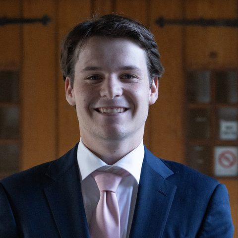
Grady Millones
VP of Alumni Relations
Grady Millones is a sophomore at Cornell University’s School of Industrial and Labor Relations, pursuing minors in Business and Organizations & Human Resources. Originally from Darien, Connecticut, he currently works remotely as an Investment Banking Analyst at Fire Clay Partners, a Kansas City-based firm. Outside of finance, Grady serves as a sports photographer for The Cornell Daily Sun and as a member of the Cornell Men’s Hockey creative team.
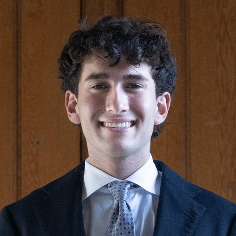
Jake Goldstein
Director of Operations
Jake is a sophomore from Chicago, Illinois in the College of Arts & Sciences, double majoring in Economics and Statistics with an intended minor in Artificial Intelligence. Outside of CGC, he is a part of the Cornell Outing Club and Cornell Pickleball Club, and he co-founded Pane in the Glass, a window washing business that has served over 200 properties in Chicago. This past summer, Jake interned in wealth management at Heritage Planning Partners, after previously working as a quantitative trading intern at Old Mission Capital. In his free time, he enjoys tennis, poker, DJing, and hiking. Jake can be reached at jog36@cornell.edu.
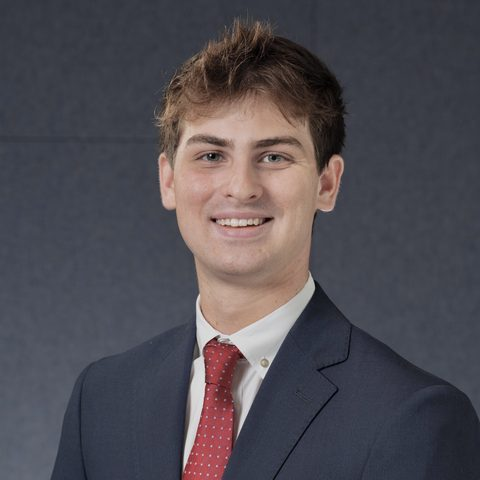
Cam Joos
Co-Director of Social Events
Cam Joos is a sophomore from Kennebunkport, ME majoring in Industrial and Labor Relations. This past summer, he participated in the Artemis Real Estate Partners Summer Enrichment Program. Outside of Cornell Growth Capital Club, Cam is a member of Cornell Alternative Investments, a goalie on the Men’s D1 Club Ice Hockey Team, and a member of a social fraternity. In his free time, he enjoys watching Boston sports, volunteering, and spending time with friends and family. He can be reached at cjj52@cornell.edu.
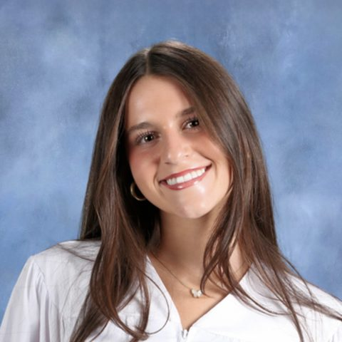
Sophie Berkowitz
Co-Director of Social Events
I'm a sophomore at Cornell studying Applied Economics and Management in the Dyson School. On campus, I'm a Project Manager with the Cornell Marketing Club, a Layout Designer for Crème de Cornell, and a member of the Hopelessly Yellow lifestyle team. I also intern at Sentinel Solutions, a private wealth management firm, where I started this past summer and have continued through the school year, building a centralized onboarding playbook and documenting procedures across teams and insurance carriers. I'm interested in marketing, brand strategy, and wealth management, and outside of work I love baking, traveling, and painting.
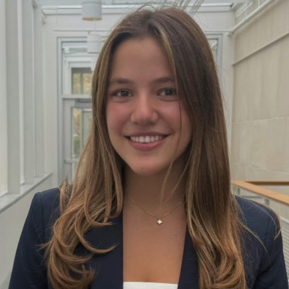
Paloma Uribe
DEI Chair
Hi! I’m Paloma and I’m originally from France and Colombia! This summer, I worked at Cité Gestion, a Private Wealth Management Bank in Geneva, Switzerland. I love skiing, sunsets, scuba diving and spending time with friends!
Michelle Flaksin
Director of Public Relations
I’m Michelle Flaksin, a sophomore from Brooklyn, NY, studying ILR with a minor in Business. I love listening to music, especially house, and going to concerts, taking long walks, trying new coffee spots, fashion, and traveling.
Deaclan Meehan
New Member Educator (NME)
Oliver Goldman
New Member Educator (NME)
Oliver is from Mill Valley, California, and studies Global and Public Health Sciences in Cornell’s College of Human Ecology, with a minor in Business. In his free time, he enjoys playing tennis, running, weightlifting, walking his dog, and spending time with friends and family. Oliver can be reached at ogg8@cornell.edu.
General Members
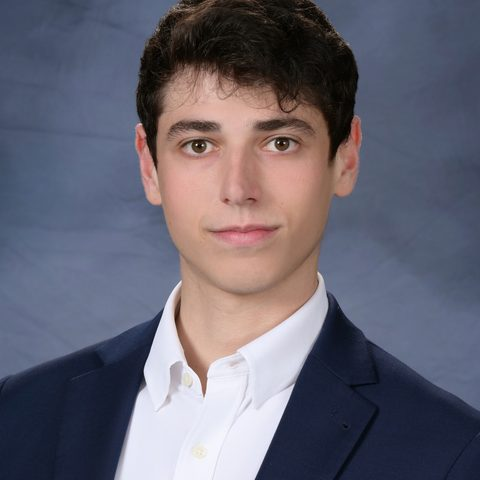
Cameron Brody
I’m from Scarsdale, New York, and major Economics in the College of Arts & Sciences. My interests include alternative investments and behavioral finance.
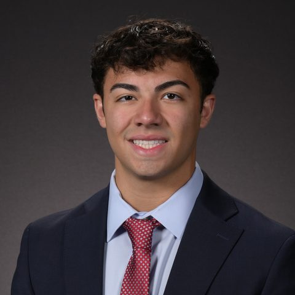
Joseph Gagliano
My name is Joseph Gagliano, I'm from Syosset, New York and I'm currently a senior in ILR. I have a passion for investing in equities and I'm excited to learn more about investing on the private side!
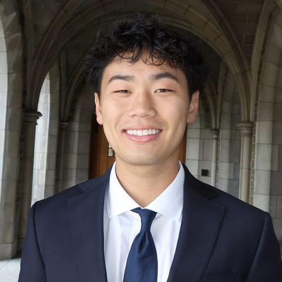
Skylor Sun
Skylor is a senior from Palos Verdes, California in the Nolan School of Hotel Administration, with a concentration in Finance and a minor in Real Estate. Outside of CGC, he is a part of the Mutual Investment Club of Cornell, Cornell Alternative Investments, Cornell Mundial FC (Men's Club Soccer), Hotel Mentorship Student Program, and a social fraternity. After graduation, Skylor will be working in Investment Banking at TD Securities on the Communications and Media team. In his free time, he enjoys playing soccer and pickleball, snowboarding, weightlifting, and spending time with family and friends. Skylor can be reached at sas682@cornell.edu.
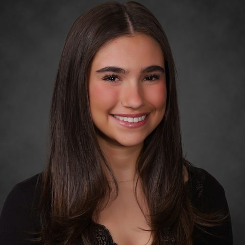
Gabby Aelion
I am a sophomore at Cornell's Nolan School of Hotel Administration from Denver, Colorado. Outside of academics, I enjoy trying new restaurants, traveling, and arts and crafts.
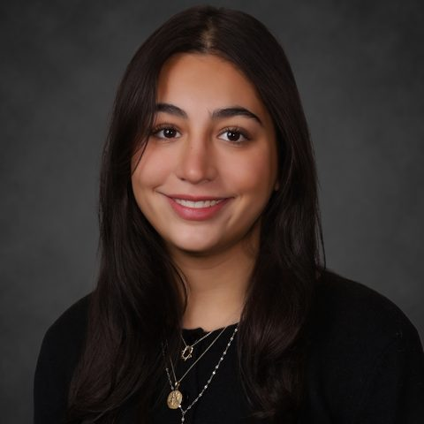
Bennet Askenazi
I'm from New York City, and I'm currently a sophomore at Cornell studying Human Development with minors in Applied Economics and Business. I'm really interested in healthcare, strategy consulting, and venture capital -- how businesses make identify opportunities for growth.
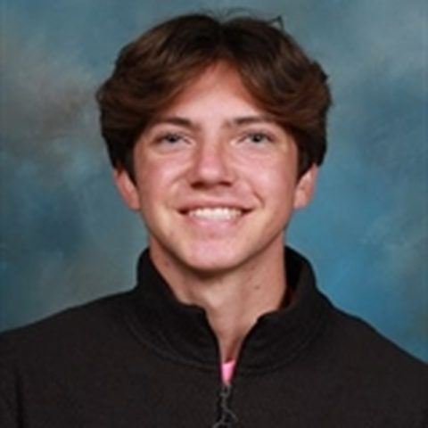
Teagan Ballard
Teagan is a junior from Los Angeles, CA majoring in Public Policy within the Brooks School. Outside of Cornell Growth Capital, he is an analyst in Cornell Global Business Club and apart of the multimedia team for the Cornell Daily Sun. This past summer, he interned as a business analyst for AperioHub. Teagan can be reached at stb96@cornell.edu.
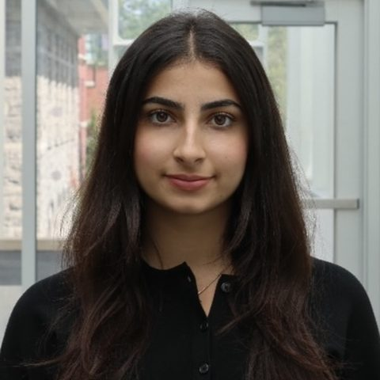
Olivia Bamshad
I’m a sophomore in ILR involved in TAMID Group and Cornell Real Estate Club. These clubs have given me hands-on experience in investment research, analyzing companies, and evaluating real estate opportunities. I interned at SkaFld Studio this past summer, where I worked on AI-focused projects and conducted market research.
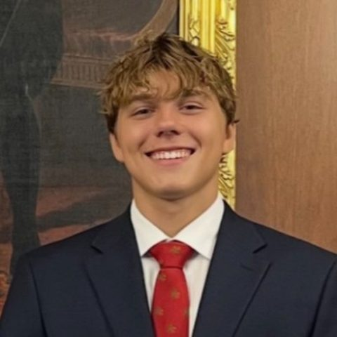
Dylan Blum
My name is Dylan Blum, and I’m from River North in downtown Chicago. I’m currently a sophomore at Cornell University studying Public Policy with minors in Business and Law & Society. I’m particularly interested in corporate law, finance, and the legal and financial considerations that influence business decisions.
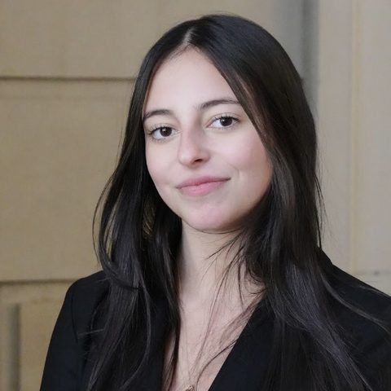
Niki Donath
I am also a part of TAMID and Cornell Latinos in Business at Cornell. I interned this past summer at Quality Branded Restaurants doing financial strategy and management.
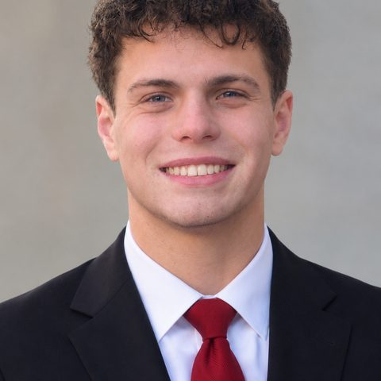
Christopher Fleming
Active member of CREC, HEC, and a social fraternity. Interned with BF Saul Company this past summer in a hotel operations management position. Interested in finance and real estate as well as backcountry backpacking and music.
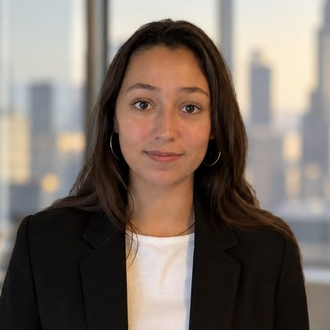
Paulina Freyre
Paulina Freyre is a sophomore from Miami, Florida majoring in History and Economics with a minor in Business. This past summer, she was a private equity intern at Foreshore Partners. Outside of Cornell Growth Capital Club, Paulina is a member of Cornell Latinos in Business and a sorority. In her free time, she enjoys sailing, cooking, and visiting museums. She can be reached at pmf73@cornell.edu.
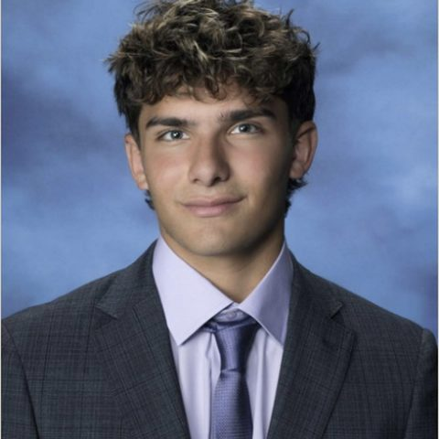
Jake Gagliano
Jake is a Sophomore from Syosset, New York, majoring in Industrial and Labor Relations at Cornell University. On campus, he is the treasurer of Cornell Growth Capital, the Healthcare Sector Lead for the Mutual Investment Club of Cornell, the Finance Chairman for Cornell Alternative Investments, a defenseman for Cornell Men's D1 Club Hockey, and a member of the Cornell Poker Club. During his free time, he likes to spend time with family and friends, play pick-up basketball, play lacrosse, work out, and build Legos. He can be reached at jwg254@cornell.edu.
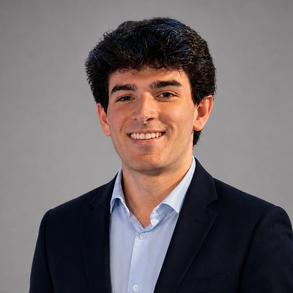
Matthew Gresock
Engineering student interested in Quantitative Trading and Development. Involved in Kappa Theta Pi.
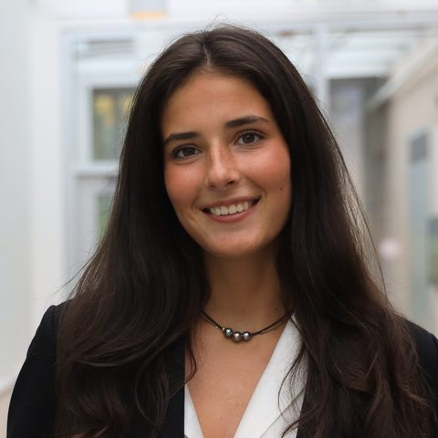
Tess Guerin
Hi, I’m Tess, I’m a sophomore from New York City studying Hotel Administration at Cornell. I’m particularly interested in consulting, alternative assets, and the consumer and retail industries. I love traveling, discovering new restaurants, and exploring different cultures.
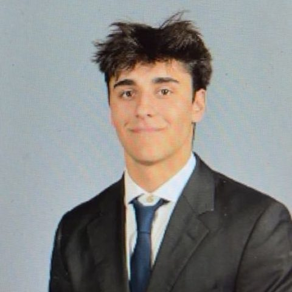
Dylan Leaird
Varsity Football, Cornell Investment Banking Club.
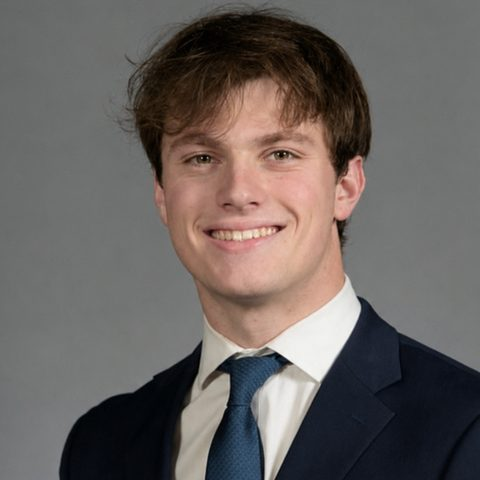
Will Moskowitz
Will is a sophomore from Katonah, New York and is pursuing a degree in Industrial and Labor Relations with a minor in Business. Outside of CGC, Will is involved in both MICC and CAI, and last summer, he worked as an intern at Harvey Partners. In his free time, he enjoys watching NY Rangers games, playing racket sports, eating New Haven-style pizza, and spending time with friends and family.
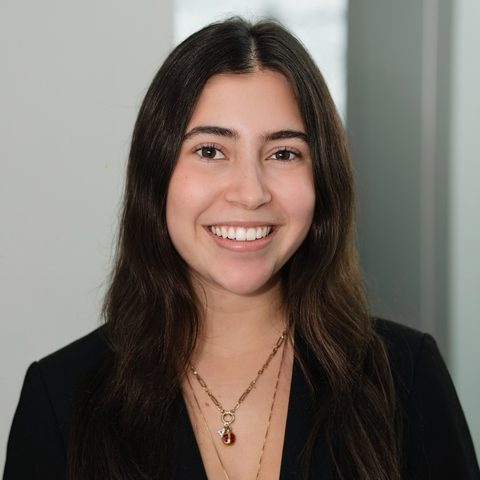
Ava Rubinstein
I am a sophomore in the College of Arts and Sciences at Cornell, majoring in American Studies and Information Science. Outside of class, I am a member of Social Business Consulting, Forté, and Professional Development of Women (PDOW). Last summer, I interned at Kelley Drye as a Business Development Intern, where I created strategies for the firm’s business team. I am originally from New York City, and I am interested in pursuing a career in sales and trading.
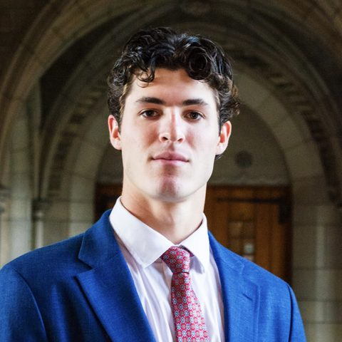
Jordan Schwartz
I am a member of the Cornell Club Tennis team and a founding board member of the Baker House. I am interning at Premier Athlete Agency this semester and worked at Rand Whitney over the summer as a process analyst intern.
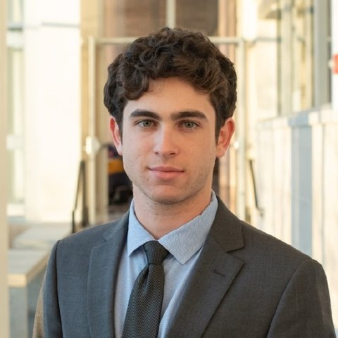
Reed Abramson
Emmet Ades
Leo Bettinger
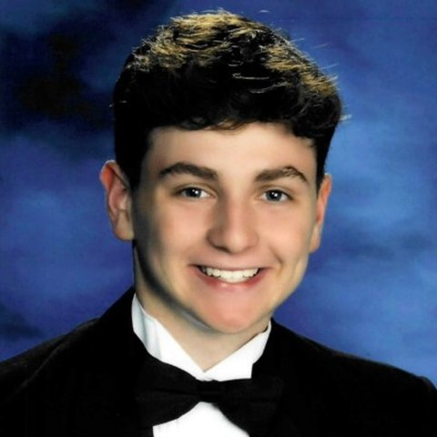
Jack Gidseg
Alex Leichter
Ben Palmet
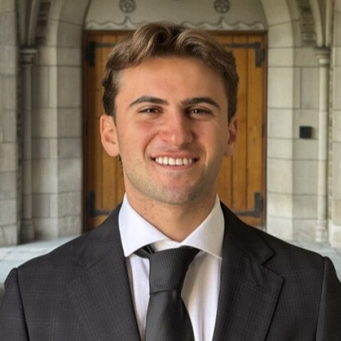
Benjamin Rabinovich
Lea Sampayo
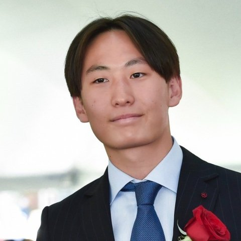
Miki Takaoka
Jessica Zucker
Industry Groups
Technology, Media & Telecom
- Michelle Flaksin
- Jake Gagliano
- Dylan Leaird
- Alex Leichter
- Ben Palmet
- Lea Sampayo
- Jordan Schwartz
Healthcare
- Bennet Askenazi
- Olivia Bamshad
- Deaclan Meehan
- Skylor Sun
- Paloma Uribe
- Jessica Zucker
Consumer & Retail
- Gabby Aelion
- Sophie Berkowitz
- Dylan Blum
- Niki Donath
- Paulina Freyre
- Oliver Goldman
Industrials
- Teagan Ballard
- Leo Bettinger
- Cameron Brody
- Matthew Fliegler
- Jack Gidseg
- Jake Goldstein
- Grady Millones
- Will Moskowitz
Alternative Investments
- Christopher Fleming
- Tess Guerin
- Cam Joos
- Benjamin Rabinovich
- Alex Young
Distressed Debt
- Reed Abramson
- Emmet Ades
- Joseph Gagliano
- Matthew Gresock
- Elliot Kaner
- Ava Rubinstein
- Miki Takaoka